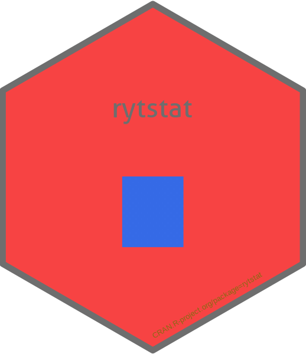

Function reference
-
rytstat-package - rytstat: Work with 'YouTube API'
-
ryt_auth_configure()ryt_auth_cache_path()ryt_open_auth_cache_folder()ryt_api_key()ryt_oauth_app() - Edit and view auth configuration
-
ryt_auth() - Authorization in YouTube API
-
ryt_deauth() - Suspend authorization
-
ryt_has_token() - Is there a token on hand?
-
ryt_token() - Produce configured token
-
ryt_user() - Get info on current user
YouTube Data API
Work with YouTube Data API https://developers.google.com/youtube/v3
-
ryt_get_channels() - Get channel info from 'YouTube API'
-
ryt_get_channel_activities() - Returns a list of channel activity events
-
ryt_get_videos() - Get list of your videos from 'YouTube'
-
ryt_get_video_details() - Get detail data of your videos on 'YouTube'
-
ryt_get_playlists() - Get playlist from 'YouTube API'
-
ryt_get_comments() - Returns a list of comment threads of video or channel
YouTube Analytics API
Work with YouTube Analytics API https://developers.google.com/youtube/analytics/data_model
-
ryt_get_analytics() - Get statistics from 'YouTube Analytics API'
YouTube Reporting API
Work with YouTube Reporting API https://developers.google.com/youtube/reporting/v1/reports
-
ryt_get_report_types()ryt_create_job()ryt_get_job_list()ryt_get_report_list()ryt_get_report()ryt_get_report_metadata()ryt_delete_job() - Returns a list of report types that the channel or content owner can retrieve. Each item in the list contains an id property, which identifies the report's ID, and you need this value to schedule a reporting job.